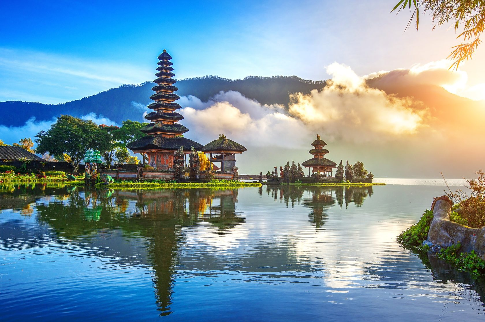
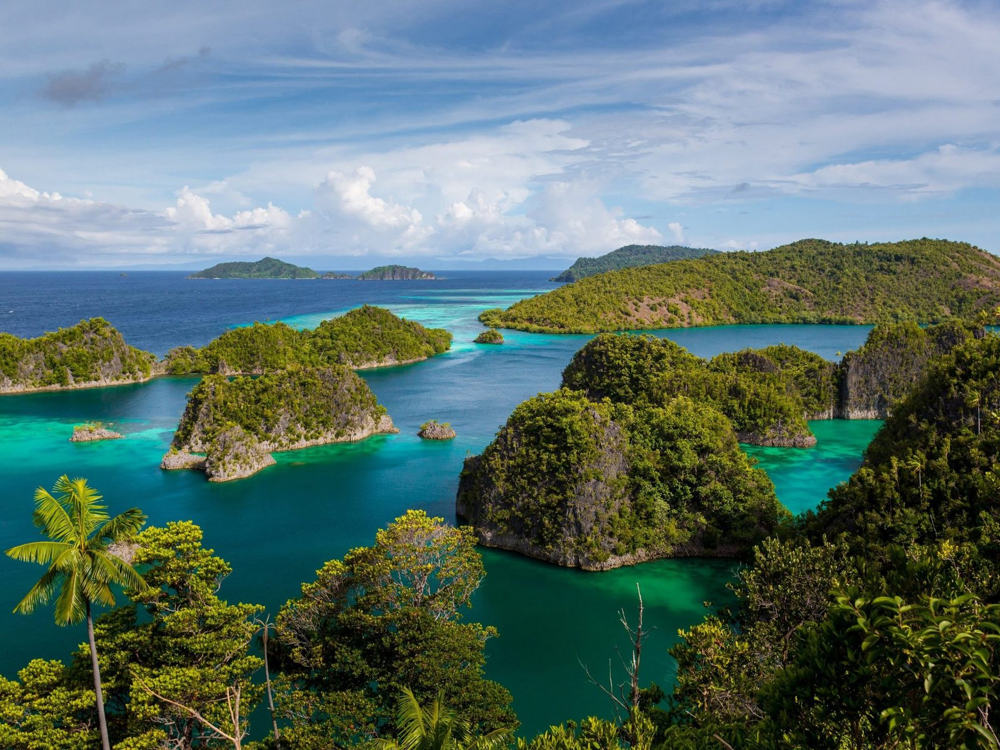
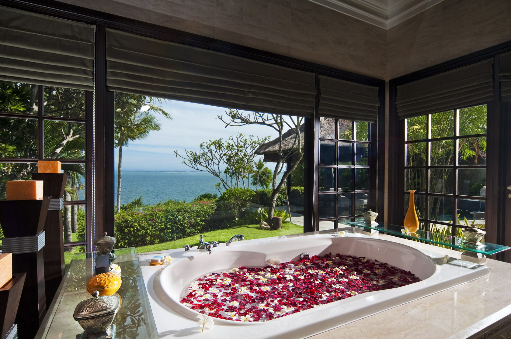
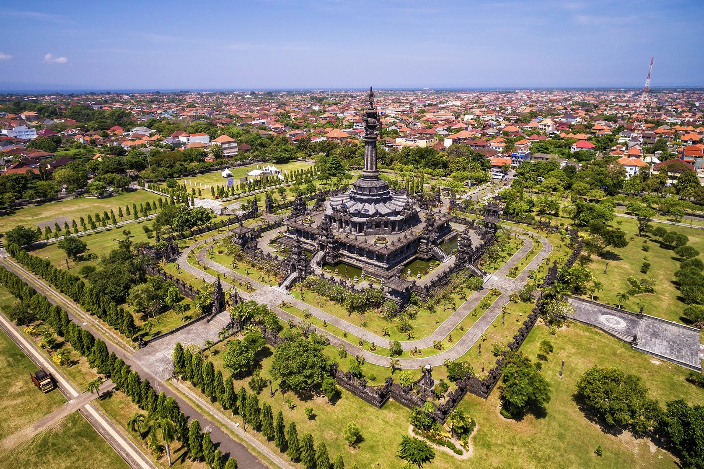
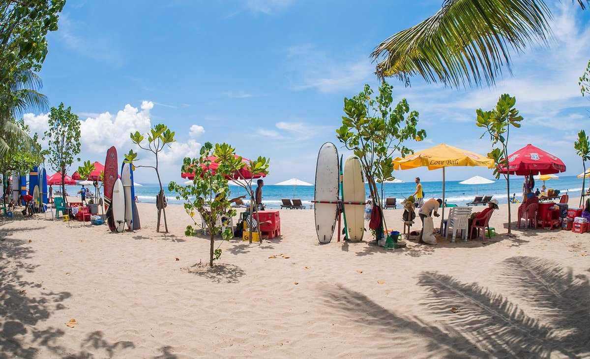
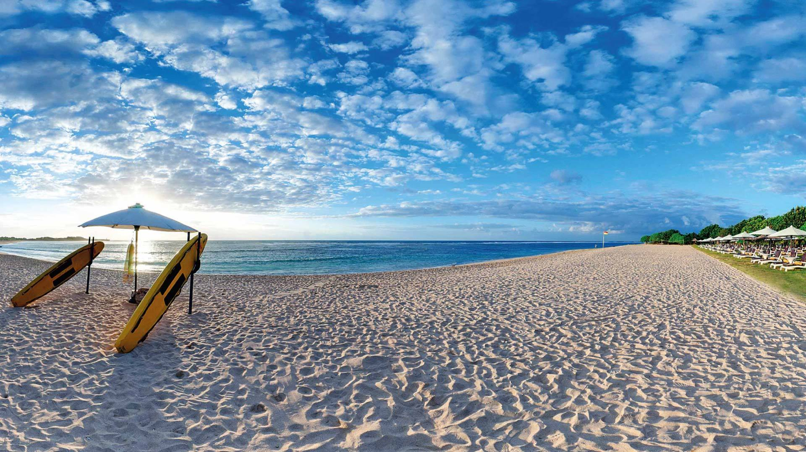
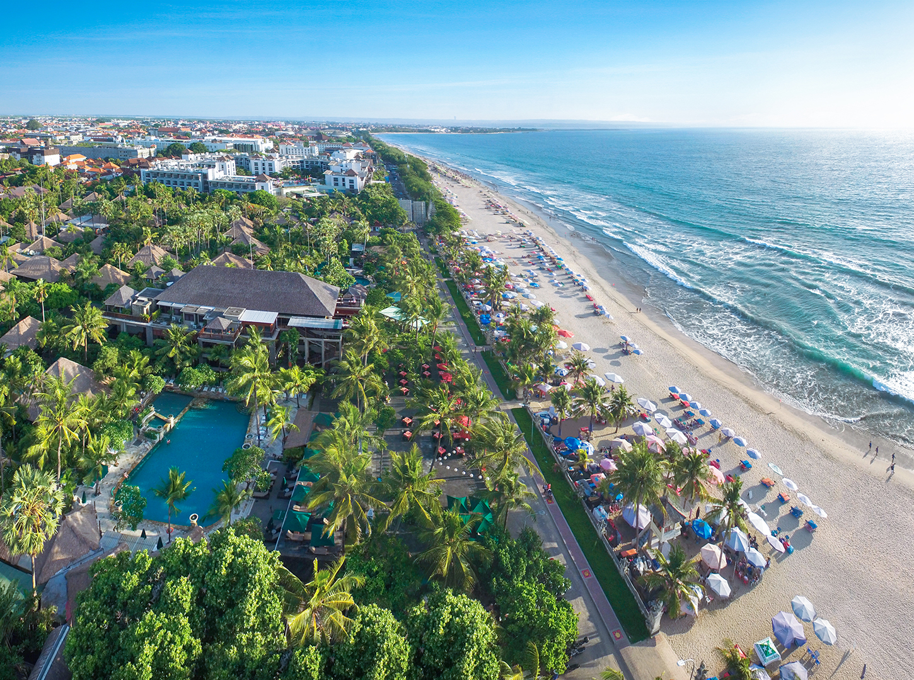
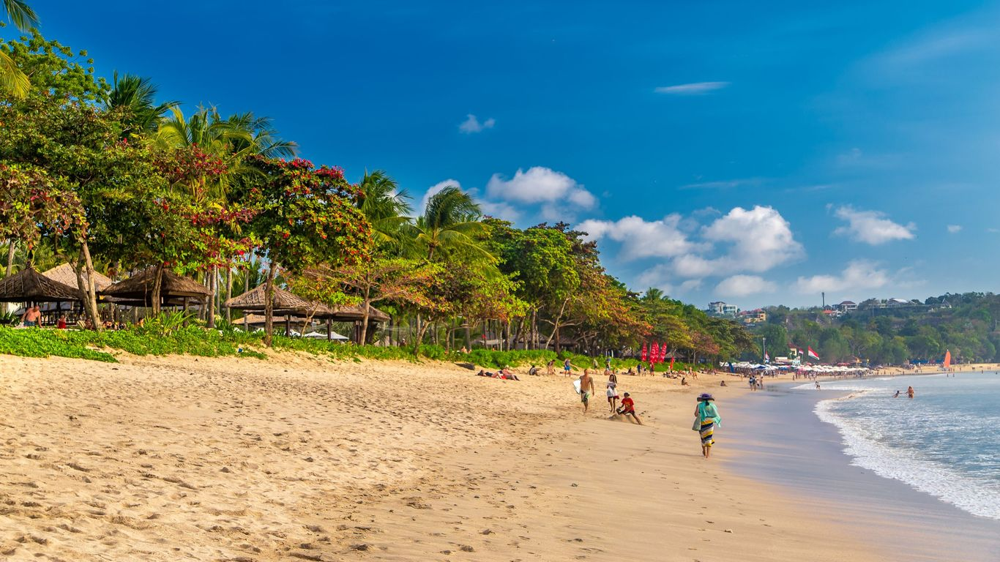
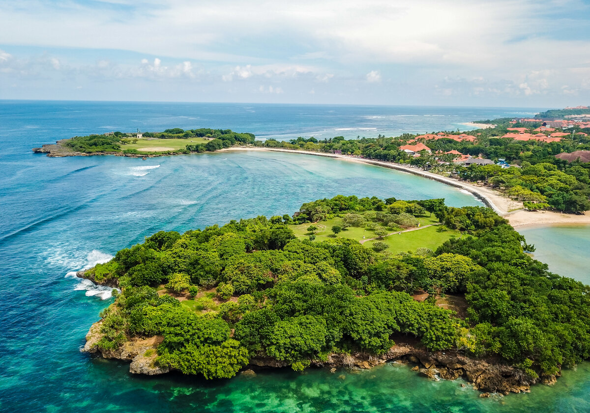
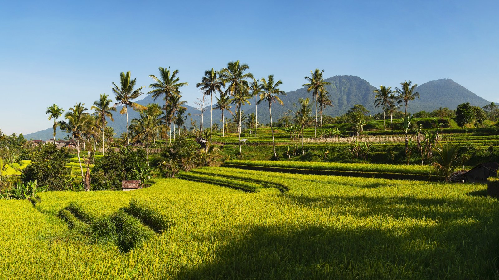

Индонезия

О стране
Индонезия – государство в Юго-Восточной Азии, расположенное между Индийским и Тихим океанами. Среди 18 тысяч островов Бали является самым популярным и одним из красивейших островов. Роскошные пляжи в окружении буйной тропической зелени превратили остров в синоним райского наслаждения, на котором круглый год стремятся восстановить силы респектабельные туристы со всего света. Кроме того, Бали – настоящая Мекка для всех желающих покорить волну – от матерых профессионалов до робких новичков. Разнообразные серф-школы с опытными инструкторами представлены здесь в завидном количестве, а идеальные погодные условия позволяют заниматься серфингом круглым год. Любителей не покорять, а созерцать на остров влечет дайвинг. В тропических водах Индийского океана есть на что посмотреть: подводные ландшафты и разнообразная морская фауна признаны одними из самых впечатляющих в мире. Проверить утверждение можно как в рамках однодневного дайв-трипа, так и многодневного дайвинг-сафари.

Бали
Бали делится на 9 провинций, бывших ранее королевствами. Самые популярные районы для отдыха — побережья Санур, Кута и Нуса-Дуа, в основном отличающиеся друг от друга удаленностью от тех или иных достопримечательностей острова Бали, а также разветвленностью инфраструктуры: одни курорты располагают к более размеренному отдыху, другие предлагают развлекательные мероприятия.
Пляжный отдых в Индонезии можно разнообразить с помощью организованных экскурсионных программ: погулять по местным храмам и познакомиться с магическими ритуалами, увидеть природные и культурные достопримечательности или отправится в сафари на джипах.
В рамках организованных экскурсий можно увидеть склоны вулкана Батур, главную святыню у горы Агунг - храм Бали, пещеру слона, лес обезьян, водопад Гит-Гит, полностью окруженный водой храм Танах Лот, спокойствие которого охраняют коралловые змеи.
Детально продуманные экскурсионные туры позволяют в течение нескольких дней погрузиться в культуру страны и познакомиться с главными достопримечательностями Индонезии. По программе туристы смогут увидеть ключевые и неповторимые буддийские храмы, познакомиться с вулканами на островах страны или покормить животных в их естественной среде обитания.

Денпасар
Денпасар – столица Бали, а заодно и главный тусовочный центр всего острова. Любителям круглосуточного веселья сюда лежит прямая дорога из бессчетного количества клубов, модных баров и ресторанов. Для тех, у кого энергия бьет через край и не ограничивается барными стойками, на курорте ждут по-настоящему активные развлечения в виде серфинга. Поймать волну помогут опытные инструкторы в любой из многочисленных серф-школ.

Кута
Кута – курортный город на юго-западе Бали, который придется по душе активной молодежи, ищущей развлечений. Соскучиться не получиться: всевозможные бары, в том числе легендарный Hard Rock Cafe с живой музыкой, рестораны, отличный шоппинг, а в эпицентре событий – аквапарк Waterboom Park c водными горками, аттракционами и подводными туннелями и специальные парки для любителей «банжи-джампинга» (Adrenalin Park, Bali Bangy).

Тубан
Тубан – умеренно спокойный курорт, на северо-западе полуострова. Здесь не так шумно, как в Куте, до которой тем не менее легко добраться в случае острого желания повеселиться в клубе. От сильных волн курорт надежно защищает коралловый риф: волны эффектно разбиваются о скалы вдалеке и практически не доходят до пляжа.

Легиан и Семиняк
Пляжи Легиан и Семиняк располагаются в 15 минутах ходьбы на север от Куты. Курорты идеально сочетают в себе преимущества Куты с ее развитой туристической инфраструктурой, в то же время выгодно отличаются от нее более спокойным пляжным отдыхом: серфингистов здесь меньше, вода спокойнее и прозрачнее.
Легиан и Семиняк – прекрасное место для шоппинга. Здесь сосредоточено множество торговых лавок и магазинов.

Джимбаран
Джимбаран – еще один курорт на южном побережье Бали, который оценят любители размеренного отдыха и семейные туристы.
Эта бухта — идеальное место для купания, из-за формы дна океана воды здесь не так сильно подвержены приливам и отливам, что дает возможность купаться в течение целого дня. Этот курорт известен ресторанами и кафе, предлагающими блюда из свежих морепродуктов, приготовленных на гриле прямо на берегу океана под открытым небом.
Очарования придают флотилии рыбацких лодок с разноцветными парусами – в прошлом местечко было рыбацкой деревушкой, да и сейчас можно встретить местных жителей, направляющихся на утренний или вечерний лов. При желании можно с легкостью договориться об аренде небольшой лодки и насладиться видами курорта с воды. Выбор рыбных блюд в местных ресторана поистине уникальный – именно сюда стекаются гурманы со всего острова. Несмотря на такую популярность Джимбаран – очень спокойный курорт, пляжи обширны, а природа выглядит нетронутой.

Нуса Дуа
Нуса Дуа – сравнительно молодой, но набирающий популярность у искушенных туристов курорт. Туристический комплекс располагает собственной охраняемой территорией и придется по вкусу любителям элитного отдыха. На полуострове расположен элитный курорт с фешенебельными отелями, охраняемой территорией, мангровыми рощами и тропическими садами, подступающими к песчаным пляжам.
От высоких волн побережье защищают коралловые рифы. Из развлечений предлагаются круизы на парусных катамаранах, дайвинг, уроки балийского танца и спа-процедуры. Большая часть отелей – это пятизвездочные комплексы со своей обширной территорией, собственными пляжами, бассейнами, теннисными кортами, широким выбором ресторанов и баров.

Убуд
Убуд находится в самом центре острова и разительно отличается от других курортов. До ближайшего океанского побережья более часа езды, тем не менее такие курорты, в окружении девственных джунглей, холмов, рек и рисовых полей все больше и больше входят в моду.

По всем вопросам свяжитесь с нами любым удобным способом:
E-mail: trohin.zh@yandex.ru
Телефон: +7 (963) 649-18-52
Соцсети: Вконтакте | Instagram | Telegram
Индивидуальный предприниматель Трохин Евгений Альбертович
ИНН 503613656680 / ОГРН ИП 315507400016056
Заполните анкету
Мы подберем идеальный тур, исходя из ваших желаний и эмоционального настроя.